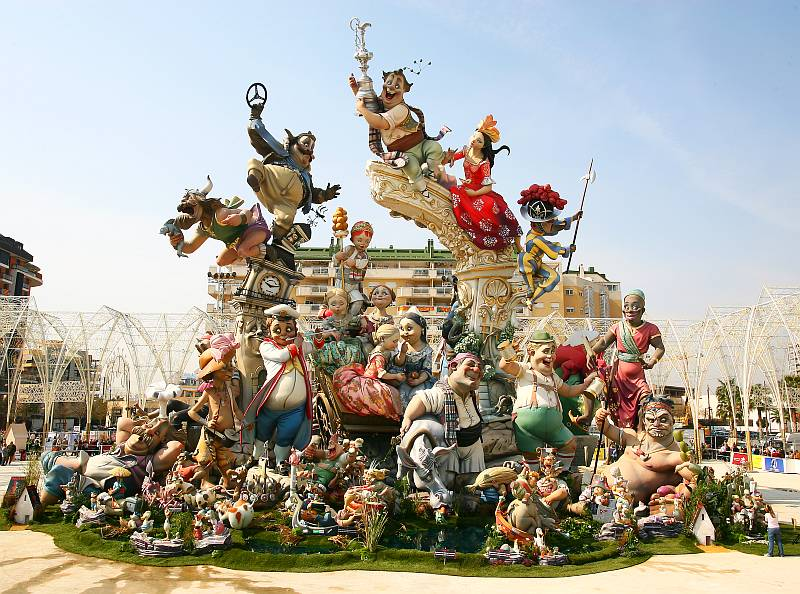

Las fallas de Valencia
¿Te gusta el olor de la pólvora? ¿Ver llamas te hace sonreír? ¿Tienes ganas de escuchar sonidos pirotécnicos? Si has respondido sí a cualquiera de estas preguntas, entonces Las Fallas de Valencia son tu fiesta: una fiesta ruidosa, humeante y muy animada donde toda la ciudad está literalmente en llamas. Las Fallas son sin duda una de las fiestas más originales y locas de España. De nuevo, España es un país conocido por sus celebraciones únicas y peculiares. Lo que empezó como un día de fiesta dedicado a San José, patrón de los carpinteros, se ha transformado en cinco días festivos, una celebración multifacética que incluye el fuego. Valencia, una ciudad tranquila con una población de más o menos un millón de habitantes, crece hasta los tres millones de amantes del fuego durante Las Fallas.
LOS NINOTS

Las Fallas literalmente significa “las llamas” en valenciano. El tema central de la fiesta es la creación y destrucción de ninots (marionetas o muñecos), que son enormes estatuas de cartón piedra, madera, papel maché y escayola. Los ninots parecen muy vivos y normalmente representan escenas satíricas con frecuencia subidas de tono y acontecimientos recientes. Un tema popular es burlarse de los políticos corruptos y de los famosos españoles. El intenso trabajo para los ninots, que pueden llegar a costar más de 60.000€, suele ser responsabilidad de las organizaciones vecinales y su construcción suele durar un año entero. Muchos ninots tienen varias alturas y hay que moverlos hasta su lugar definitivo en alguno de los más de 350 cruces y parques de la ciudad con la ayuda de grúas el día de la plantá. Los ninots permanecen en el lugar hasta el 19 de marzo, el día conocido como La Cremá. Empieza por la tarde cuando jóvenes con hachashacen agujeros escondidos en las estatuas y las llenan de fuegos artificiales. La multitud empieza a corear, las luces de las calles se apagan y a los ninots se les prende fuego a las 12 en punto de la noche. Con el paso de los años, los bomberos locales han ideado formas únicas de proteger los edificios de la ciudad para que no ardan de forma accidental por culpa de los ninots, como cubrir con lona ignífuga las fachadas de las tiendas. Cada año, uno de los ninots es salvado de la destrucción por el voto popular. Este se llama ninot indultat (ninot indultado) y es exhibido en el Museo del Ninot local con los favoritos de los años anteriores. Un viajero pirómano describe el acontecimiento: “¡La escena de Las Fallas es extremadamente catártica y difícil de describir, pero representa el cruce entre una Disnelandia subida de tono, una muestra de fuegos artificiales inmensa y el fin del mundo!”
El origen de Las Fallas es un poco oscuro, pero la mayoría piensa que son una evolución de los rituales paganos que se celebraban al principio de la primavera y de la temporada de siembra. En el siglo XVI, Valencia usaba luces urbanas sólo en las largas noches invernales. Las lámparas de las calles colgaban de estructuras de madera, llamadas parots, y como los días se hacían más largos los ya no necesitados parots eran ceremoniosamente quemados el día de San José. Incluso hoy la fiesta mantiene sus raíces satíricas y de clase trabajadora, y aquellos que no pueden aguantar esto normalmente se marchan de Valencia durante Las Fallas.
Communidad Valenciana